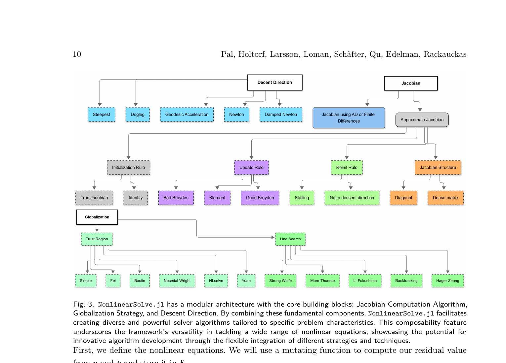
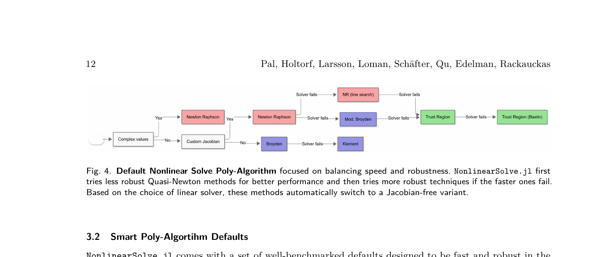
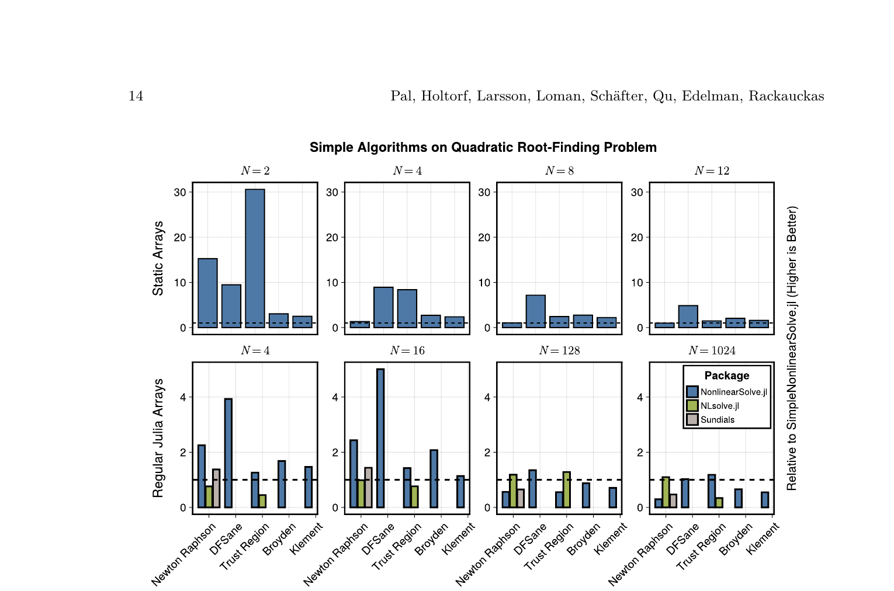
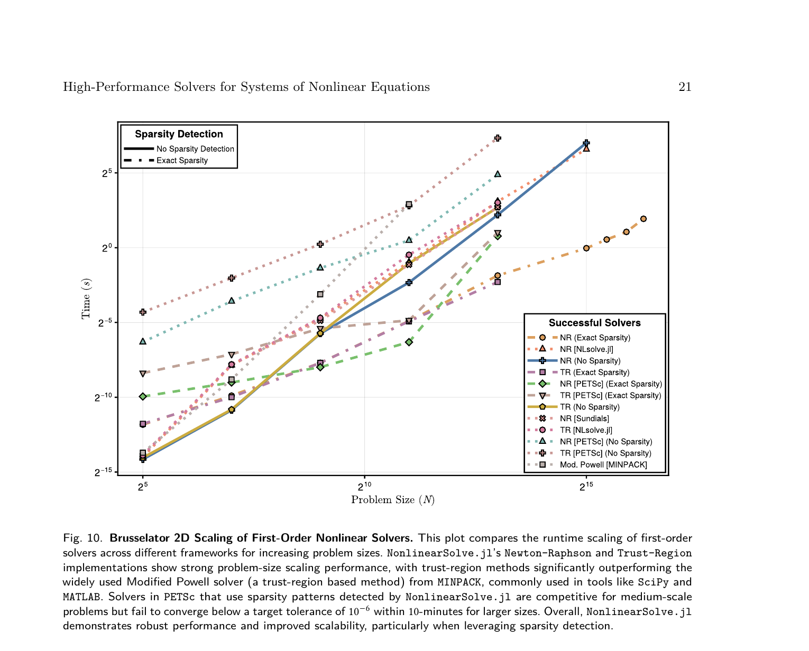

解非线性方程组这件事，为什么现有的工具要么慢、要么脆、要么不灵活？
几乎所有科学计算的核心步骤最终都归结为解一组非线性方程：求 ODE 的稳态、初始化 DAE、训练深度平衡模型、求解 PDE 的离散系统。这个问题到处都是。
现有工具各有各的毛病。MINPACK（SciPy 和 MATLAB 的底层）快但没有自动微分、没有稀疏检测、没有 Krylov 方法，遇到稍微复杂的问题就失败或者比别人慢 100 倍。Sundials KINSOL 专为大系统设计但启动开销大，小系统上浪费。PETSc SNES 分布式能力强但不支持稀疏 AD。NLsolve.jl 接口友好但缺少专门化的线性求解器选择，性能上不去。
更根本的问题是：这些工具都不让你方便地换零件。想用 Newton-Raphson 但换一种 line search？想用 Trust Region 但换一种半径更新策略？想让同一段代码在 CPU 和 GPU 上都跑？在现有工具里，这些"本该简单的事"都很难做。
MINPACK 像一把螺丝刀——快、简单、但只能拧螺丝。PETSc 像一台工业级电钻——强大但需要专业培训，用它拧个小螺丝大材小用。
NonlinearSolve.jl 的思路是做一个模块化工具箱。工具箱里有各种螺丝刀、各种电钻、各种扳手。你可以自己选组合，也可以让它自动帮你选——它会看问题的大小和结构，自动挑最合适的工具。
NonlinearSolve.jl 把所有非线性求解器拆成三个可组合的模块：

这三个模块可以自由组合。Table 1 列出了所有预置的求解器配置——从基础的 Newton-Raphson 到带测地加速的 Levenberg-Marquardt，从 Broyden 拟牛顿法到 Pseudo-Transient 方法，一共十来种，每一种都是三个模块的不同搭配。
大多数用户不想自己选算法。NonlinearSolve.jl 提供了一个 poly-algorithm：根据问题特征自动选择求解策略，从快但不稳定的方法开始试，失败了自动切换到更稳健的方法。

线性求解器的选择也是自动的：根据矩阵是稠密/稀疏、对称/非对称、条件数好/坏，自动在 LU、Cholesky、KLU、UMFPACK、GMRES、SVD 之间选择。
小系统零分配 kernel：对于 2-12 个变量的小系统，SimpleNonlinearSolve.jl 用 StaticArrays 实现了完全不分配内存的求解器。不做堆分配意味着可以直接嵌入 GPU kernel——用同一段代码在 CPU、CUDA、ROCm 上跑。小系统上比标准求解器快 10-30 倍。

自动稀疏检测 + 着色：对大系统（上千个变量），Jacobian 通常是稀疏的。NonlinearSolve.jl 自动检测稀疏模式，用图着色算法压缩 AD 计算——比如一个 1000×1000 的稀疏 Jacobian 如果只有 5 种颜色，只需要 5 次 JVP 而不是 1000 次。
Jacobian-free Krylov 方法：对于更大的系统（上万个变量），连稀疏 Jacobian 都存不下。NonlinearSolve.jl 支持完全不构建 Jacobian 的 Krylov 求解器（GMRES 等），用 AD 直接计算 Jacobian-vector product。
在 23 个标准小规模测试问题上，NonlinearSolve.jl 的 Newton-Raphson 是唯一全部解出的配置（23/23）。Sundials 和 MINPACK 各有几个解不出来。
在一个工业级 DAE 初始化问题上（锂电池 DFN 模型，Jacobian 条件数 ~1014），MINPACK 和 PETSc 全部失败，NonlinearSolve.jl 的多种配置都能收敛。

在 2D Brusselator（大规模 PDE 稳态求解）上，NonlinearSolve.jl 利用稀疏检测后比 MINPACK 快得多，并且是唯一能在所有规模上都收敛到 10−6 精度的框架。
不是选一个算法，而是按稳健性递增的顺序依次尝试多个算法，前一个失败自动切换到下一个。
修水管。先试最简单的办法（拧紧接头），不行就试中等办法（换垫圈），再不行就上大招（换管子）。每一步都比上一步更贵但更可靠。NonlinearSolve.jl 的默认流程就是这样：Broyden → Newton → Newton+LineSearch → TrustRegion。
用户不需要知道哪个算法适合自己的问题。默认行为就是"又快又稳"——简单问题上走最快的路，难题上自动降级到更稳的方法。这让 NonlinearSolve.jl 在 23 个测试问题上全部求解成功。
先检测 Jacobian 的稀疏模式，然后用图着色算法找到最少的 AD 评估次数来填充整个稀疏 Jacobian。
考试改卷。如果 1000 份卷子里只有 5 种不同的答案模式（比如同一道题的答案只取决于几个变量），你不需要改 1000 份——找出 5 种模式，每种改一份，其余直接对照。图着色做的就是找出 Jacobian 中哪些列可以"合并"评估。
这是 NonlinearSolve.jl 在大规模问题上能比 MINPACK 快一个数量级的关键原因。MINPACK 不支持稀疏 AD，只能按稠密矩阵算 Jacobian。NonlinearSolve.jl 自动检测稀疏性后，计算量从 O(n) 降到 O(着色数)，着色数通常远小于 n。
这个想法朴素但有效。学术论文通常追求"一个更好的算法"。NonlinearSolve.jl 的 poly-algorithm 说的是：没有一个算法在所有问题上都好。与其找最好的一个，不如把已有的方法按成本从低到高排成梯队，自动逐级尝试。结果是：在 23 个测试问题上唯一做到 23/23 全解出，而每个单独的算法都至少有一个解不出来。
这也解释了为什么 Julia 生态在这个问题上有优势——多重分发让"换零件"几乎零成本，JIT 编译让动态选择不带运行时惩罚，AD 框架让 Jacobian 计算自动化。这些语言特性不是锦上添花，而是让 poly-algorithm 设计成为可能的基础设施。
选题实用且重要。非线性方程求解器是科学计算的基础设施，一个好的开源实现能惠及大量下游应用。这个团队（SciML 生态的核心开发者）有足够的经验和动机做这件事。
方法设计用心。三个组件的模块化分解清晰。Poly-algorithm 的层级回退策略虽然不新颖（KNITRO 也有类似思路），但在非线性方程组求解器里做到这种程度的自动化是头一次。小系统的零分配 kernel 是个好主意——StaticArrays + GPU 的组合让同一个算法既能在 CPU 上跑单个问题，也能在 GPU 上并行跑上万个。
实验覆盖面广。三个层次的测试（23 个小规模标准问题、DFN 电池 DAE 初始化、大规模 Brusselator PDE）分别展示了鲁棒性、处理病态问题的能力、和可扩展性。Work-precision diagram 是比较求解器的正确方式。和五个基线的对比（Sundials、MINPACK、PETSc、NLsolve.jl、CMINPACK）也算全面。
短板。第一，论文太长（27 页）且结构偏碎。Section 2 讲数学背景、Section 3 讲特性、Section 4 讲实验，但 Section 2 和 3 之间有大量重叠——line search 和 trust region 在两处都讲了。第二，GPU 性能只展示了小系统的零分配 kernel，没有在大规模问题上展示 GPU 加速效果。第三，poly-algorithm 的自动选择策略虽然好用，但缺乏理论分析——什么条件下会选错？选错的代价有多大？一个失败的 Broyden 尝试会浪费多少时间？第四，和 Uno（前面读过的那篇）相比，NonlinearSolve.jl 的模块化还不够形式化——没有定义清晰的"组件接口协议"，更多是依赖 Julia 的多重分发机制。
写作中规中矩。Figure 3 的架构图很好，Figure 4 和 5 的决策流程图也有信息量。但整体篇幅可以压缩——很多代码示例可以放附录。
迁移：Poly-algorithm 的"从便宜到贵逐级尝试"策略可以直接用在 GPUTherm 的闪蒸求解器设计中。闪蒸计算的瓶颈之一是选择合适的初始化和迭代方法——可以先用最简单的 Successive Substitution 试，失败了自动切换到 Newton-Raphson，再失败切带 trust region 的版本。这比写一堆 if-else 判断优雅得多。
混搭：NonlinearSolve.jl 的稀疏 AD + 着色技术和 GPUTherm 的算子分解可以产生有趣的组合。目前 GPUTherm 的 Jacobian 是手动推导的解析表达式。如果用稀疏 AD 自动生成 Jacobian（只需要函数实现），既能省大量人工，又能保持性能——因为热力学模型的 Jacobian 天然是稀疏的（mixing rules 的 O(Nc^2) 结构对应着特定的稀疏模式）。